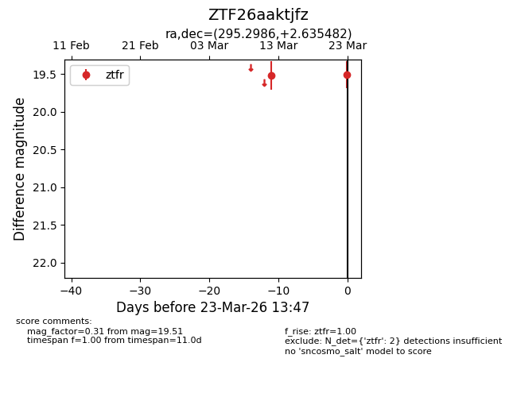
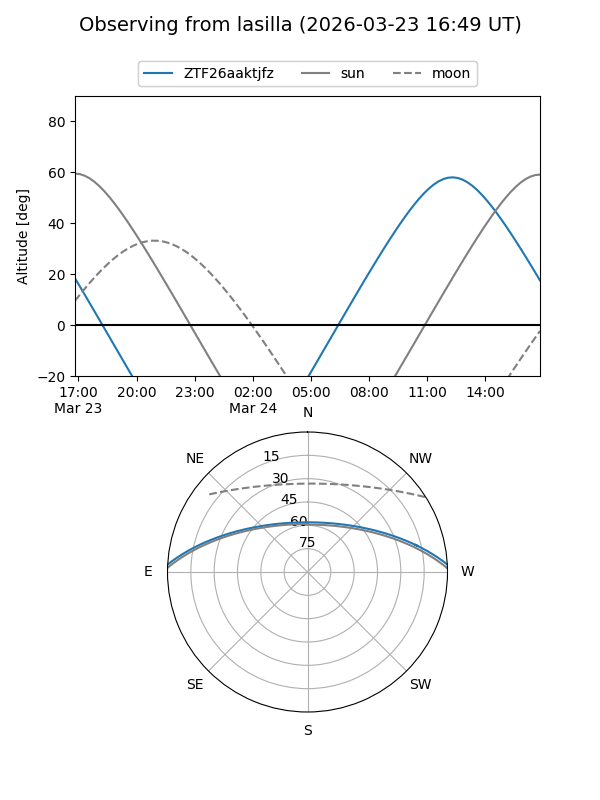
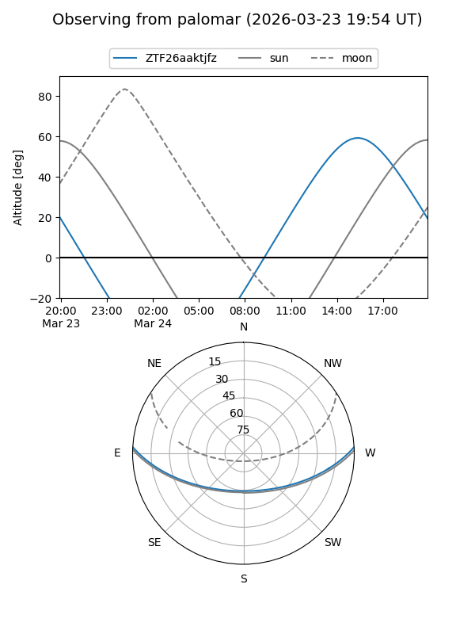

ZTF26aaktjfz
Target ZTF26aaktjfz at 2026-03-23 13:50
Aliases and brokers:
FINK: link
Lasair: link
ALeRCE: link
alt names
ZTF26aaktjfz (ztf,fink_ztf)
Coordinates:
equatorial (ra, dec) = 295.2986,+2.63548
equatorial (HMS+DMS) = 19:41:11.66,+02:38:07.74
galactic (l, b) = (41.0438,-9.81895)
Flags:
Photometry:
last ztfr=19.51
2 ztfr detections
Lightcurve

Visibility


Additional plots